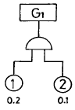
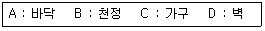
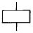
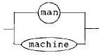
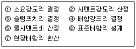
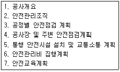

건설안전기사 (2003-03-16 기출문제)
1과목: 산업안전관리론
1. 자체검사 방법의 분류에 속하지 않는 것은?
- 형식에 의한 검사
- 타진에 의한 검사
- 검사기기에 의한 검사
- 육안에 의한 검사
(정답률: 44%)
2. 안전보건 관리책임자의 임무에 대하여 기술한 것 중에서 잘못된 것은?
- 유해 위험 방지 업무의 총괄 관리
- 작업환경 점검 업무의 총괄 관리
- 산업재해예방 계획의 수립에 관한 사항
- 안전에 관한 보조자의 감독
(정답률: 64%)
3. 각 계층의 관리감독자들이 숙련된 안전관찰을 행할 수 있도록 훈련을 실시함으로써 사고의 발생을 미연에 방지하여 안전을 확보하는 기법은?
- THP 기법
- STOP 기법
- TBM 기법
- TD - BU 기법
(정답률: 58%)
4. 버드(F.E.Bird's Jr)의 사고 구성 비율은?
- 중상 : 경상 : 무상해 사고 = 1:20:200
- 중상 : 경상 : 무상해 사고 = 1:29:300
- 중상 : 경상 : 무상해 사고 : 무상해 무사고 고장 = 1:10:30:600
- 중상 : 경상 : 무상해 사고 : 무상해 무사고 고장 = 1:20:50:650
(정답률: 71%)
5. 버드(F. Bird)의 사고 5단계 연쇄성 이론에서 제3단계는 무엇인가?
- 직접원인(징후)
- 기본원인(원인학)
- 통제의 부족(관리 부재)
- 사고(접촉)
(정답률: 67%)
6. 천인율이 40 이라함은 평균근로자수가 100명이 되는 사업자에서 1년 동안에 몇명의 상해자가 발생 되었다는 뜻인가?
- 4명
- 8명
- 40명
- 80명
(정답률: 73%)
7. 재해조사의 주된 목적을 가장 적절히 표현한 것은?
- 직접원인을 색출하기 위함
- 동종재해 유사재해 재발방지
- 산업재해 기초원인을 찾기 위하여
- 안전관리 계획을 수립하기 위하여
(정답률: 64%)
8. 연(Pb)을 제련 또는 정련하는 공정에서 배소, 소결, 용광 또는 연 등이나 소결광 등을 취급하는 업무에서 반드시 착용해야 할 보호구는 무엇인가?
- 안전모
- 안전대
- 호흡용 보호구
- 귀마개, 귀덮개
(정답률: 74%)
9. 사업장 단위의 재해 통계중 재해발생의 장기의 추이 및 계절적 특징을 파악하는데 편리한 통계는?
- 월별 통계
- 직장별 통계
- 시각별 통계
- 요일별 통계
(정답률: 74%)
10. 안전조직 형태 중 직계(line)형의 특징은?
- 대규모의 사업장에 적합하다.
- 안전지식이나 기술축적이 용이하다.
- 안전지시나 명령이 신속히 수행된다.
- 독립된 안전참모 조직을 보유하고 있다.
(정답률: 84%)
11. 동작분석의 목적이 아닌 것은?
- 표준동작의 설정
- 동작 계열의 개선
- 동작의 유연성 확보
- 작업의 모션마인드(Motion mind) 체질화
(정답률: 47%)
12. 안전성 평가는 6단계 과정을 거쳐 실시되는데 이에 해당되지 않는 것은?
- 작업조건의 측정
- 정성적 평가
- 안전대책수립
- 관계자료의 정비검토
(정답률: 57%)
13. 다음중 안전관리 계획수립시 기본계획에 해당되지 않는 것은?
- 전체사업장 및 직장단위로 구체적으로 계획한다.
- 계획의 목표는 점진적으로 중간수준의 것으로 한다.
- 사후형 보다는 사전형의 안전대책을 채택한다.
- 여러개의 안을 만들어 최종안을 채택한다.
(정답률: 73%)
14. 센트루이스 석유회사의 중역인 아담스(Edword Adams)의 사고 연쇄이론의 단계가 옳게 나열된 것은?
- 사회적 환경 및 유전적 요소 - 개인적 결함 - 불안전 행동 및 상태 - 사고 - 상해
- 통제의 부족 - 기본원인 - 직접원인 - 사고 - 상해
- 관리구조 - 작전적에러 - 전술적에러 - 사고 - 상해
- 안전정책과 결정 - 불안전 행동 및 상태 - 물질에너지 기준이탈 - 사고 - 상해
(정답률: 60%)
15. 다음 중 안전점검의 대상으로 부적절한 것은?
- 안전조직 및 운영 실태
- 안전교육계획 및 실시 상황
- 인력의 배치 실태
- 운반설비
(정답률: 56%)
16. 시설, 기계, 기구등의 구조 및 설치상태와 안전기준과의 적합성 여부를 확인하는 행위를 무엇이라고 하는가?
- 시운전
- 안전점검
- 안전 장치 조절
- fail safe
(정답률: 74%)
17. Heinrich의 재해손실비 계산에 있어서 간접 손실비 항목 중 가장 상관이 적은 것은?
- 부상자의 시간손실
- 관리감독자가 재해의 원인조사를 하는데 따른 시간 손실
- 근로자와의 제3자에게 신체적 상해를 입혔을 때의 손실
- 기계, 공구, 재료 그밖의 재산손실
(정답률: 46%)
18. 다음중 자체 검사에 관한 사항으로 옳지 않는 것은?
- 크레인과 리프트는 6개월에 1회이상 자체 검사를 실시한다.
- 승강기의 자체검사 항목으로는 가이드 레일의 상태도 포함한다.
- 절단기의 자체검사 항목에만 주축의 축수부의 이상 유무가 있다.
- 원심기 및 건조 설비는 1년에 1회이상 자체 검사를 실시한다.
(정답률: 43%)
19. 사고의 용어 중 "Near accident"란 무슨 뜻인가?
- 사고가 일어나더라도 손실을 수반하지 않는 경우
- 사고가 일어날 경우 인적재해가 발생하는 경우
- 사고가 일어날 경우 물적재해가 발생하는 경우
- 사고가 일어나더라도 약간의 손실만 수반하는 경우
(정답률: 71%)
20. 산업 안전표지로서 경고표지에 해당되는 색도 기준으로 옳은 것은?
- 5R 4/13
- 5G 5.5/6
- 7.5PB 2.5/7.5
- 2.5Y 8/12
(정답률: 50%)
2과목: 산업심리 및 교육
21. 다음은 5관의 활용중에서 교육효과에 관한 내용이다. 바르게 연결된 것은?
- 시각효과 - 50%
- 청각효과 - 20%
- 촉각효과 - 5%
- 후각효과 - 10%
(정답률: 42%)
22. 직무분석의 방법으로 맞지 않 는 것은?
- 면접법
- 강의법
- 질문지법
- 일지작성법
(정답률: 51%)
23. 스트레스(Stress)에 영향을 주는 요인 가운데 환경이나, 외부를 통해서 일어나는 자극 요인에 해당 되는 것은?
- 현실에의 부적응
- 도전의 좌절과 자만심의 상충
- 자존심의 손상
- 직장에서의 대인관계 갈등과 대립
(정답률: 65%)
24. 다음중 욕구저지(欲求咀止)반응의 기제에 관한 가설이 아닌 것은?
- 욕구저지 - 공격가설
- 욕구저지 - 퇴행가설
- 욕구저지 - 고착가설
- 욕구저지 - 보상가설
(정답률: 36%)
25. 안전 사고 발생의 심리적 요인에 해당 되는 것은?
- 육체적 능력 초과
- 신경 계통 이상
- 감정
- 극도의 피로
(정답률: 63%)
26. 매슬로우의 5단계 욕구성장과정을 관리감독자의 능력과 연결시켰다. 틀 린 것은?
- 포괄절 능력 - 존경의 욕구
- 인간적 능력 - 생리적 욕구
- 기술적 능력 - 안전의 욕구
- 종합적 능력 - 자기실현의 욕구
(정답률: 28%)
27. 어떤 일을 함에 있어 타인과 비교하여 적은 노력으로 좋은 결과를 가져오게 하는 사람이 있는데, 이런 경우 어떤 적성과 관련성이 있는가?
- 기능적성
- 성능적성
- 성격적성
- 신체적적성
(정답률: 38%)
28. 다음 욕구의 동기 부여중 가장 기초적인 현상에 해당되는 것은?
- 호기심
- 애정
- 능력
- 배고픔
(정답률: 56%)
29. 안전교육의 목적을 설명한 것 중 틀 린 것은?
- 재해발생에 필요한 요소들을 교육하여 재해를 방지하기 위함
- 생산성이나 품질의 향상에 기여하는데 필요하기 때문
- 작업자에게 안정감을 부여하고 기업에 대한 신뢰감을 부여하기 위함
- 외부에 안전교육 실시를 PR하기 위함
(정답률: 66%)
30. 다음 중 사람의 기술분류에 해당되는 것은?
- 육체적 - 지능적 - 심리적 - 언어적
- 근력적 - 정신적 - 심리적 - 조작적
- 전신적 - 조작적 - 인식적 - 언어적
- 조작적 - 인신적 - 정적 - 동적
(정답률: 28%)
31. 다음은 사고 비유발자의 특성에 관한 설명이다. 틀 린 것은?
- 의욕과 집착력이 강하다.
- 주의력 범위가 좁고 편중되어 있다.
- 상황판단이 정확하며 추진력이 강하다.
- 자기의 감정을 통제할 수 있고 온건하다.
(정답률: 58%)
32. 의식의 레벨로서 다음의 4단계가 있다. 이 중 일상적인 정상작업은 일반적으로 몇 단계의 의식으로 처리 하는가?
- Phase Ⅰ
- Phase Ⅱ
- Phase Ⅲ
- Phase Ⅳ
(정답률: 34%)
33. 안전교육 방법 중 피교육자의 동작과 직접적으로 관련있는 교육방법은?
- 강의식
- 토의식
- 문답식
- 실연식
(정답률: 64%)
34. 맥그레거(Douglus Mcgregor)의 X이론에 해당되는 것은?
- 상호신뢰감
- 고차적인 욕구
- 규제관리
- 자기통제
(정답률: 57%)
35. 다음 중 안전태도교육을 위한 기본단계에 속하지 않 는 것은?
- 강요한다.
- 모범을 보인다.
- 칭찬을 한다.
- 이해납득시킨다.
(정답률: 61%)
36. 다음 중 불안전한상태(물적요인)에 해당되지 않 는 것은?
- 물질 자체의 결함
- 작업 환경의 결함
- 생산 공정의 결함
- 안전 장치의 기능제거
(정답률: 55%)
37. 다음은 사고와 연결되는 인간의 행동특성을 설명한 것이다. 틀 린 것은?
- 돌발적 사태하에서는 인간의 주의력이 분산된다.
- 안전태도가 불량한 사람은 리스크테이킹(risk taking)의 빈도가 높다.
- 자아의식이 약하거나 스트레스에 저항력이 약한자는 동조경향을 나타내기 쉽다.
- 순간적으로 대피하는 경우에 우측 보다 좌측으로 몸을 피하는 경향이 높다.
(정답률: 31%)
38. 기업이 갖고 있는 교육훈련 특성에 해당되지 않 는 것은?
- 필요시 집중적으로 실시한다.
- 같은 교재로 교육훈련이 실시되는 것이 많다.
- 교육훈련시 경제적이고 능률적인 것이 필요하다.
- 피교육자의 학습능력이 각양각색인데도 집합 강의법 활용이 많다.
(정답률: 40%)
39. 슈우퍼(Super)의 역할이론에 있어서 그 내용과 관계되지 않 는 것은?
- 역할 연기
- 역할 형성
- 역할 유지
- 역할 기대
(정답률: 40%)
40. 교육 훈련시 발견학습적인 관점에서 자료가 필요하다. 그 용도의 자료와 관계가 적 은 것은?
- 직접 이해시키는데 필요한 자료
- 계획에 필요한 자료
- 탐구에 필요한 자료
- 발전에 필요한 자료
(정답률: 38%)
3과목: 인간공학 및 시스템안전공학
41. 청각적 표시장치의 설계시 적용하는 일반원리 중 설명이 옳지 못한 것은?
- 양립성이란 긴급용 신호일 때는 낮은 주파수를 사용한다는 것
- 근사성이란 복잡한 정보를 나타낼 때 2단계의 신호를 보내야 한다는 것
- 분리성이란 두 가지 이상의 채널을 듣고 있다면 각 채널의 주파수가 분리되어야 한다는 것
- 검약성이란 조작자에 대한 입력신호는 꼭 필요한 것만을 제공하여야 한다는 것
(정답률: 32%)
42. 100분 동안 10kcal/min으로 수행되는 삽질 작업을 하는 40세 근로자에게 제공되어야 할 적합한 휴식시간은 얼마인가?
- 66.87분
- 51.77분
- 32.45분
- 10.00분
(정답률: 17%)
43. 동작의 합리화를 위한 동작경제의 법칙에서 벗어난 것은?
- 동작을 가급적 조합하여 하나의 동작으로 할 것.
- 양손의 동작은 동시에 시작하고, 동시에 끝낼 것.
- 동작의 수는 줄이고, 동작의 속도는 적당히 할 것.
- 동작의 범위는 최소로 하되, 사용하는 신체의 범위는 크게 할 것.
(정답률: 61%)
44. FTA기법의 발생확률 G1 값은?

- AND 이므로 0.02이다.
- AND 이므로 0.1이다.
- AND 이므로 0.2이다.
- AND 이므로 0.3이다.
(정답률: 53%)
45. 빛의 반사율이 낮아야 하는 순서를 바르게 배열한 것은?

- A >B >C >D
- A >C >D >B
- A >C >B >D
- A >D >C >B
(정답률: 48%)
46. 시스템안전관리의 내용에 해당되지 않는 것은?
- 시스템 어프로치
- 안전활동의 조직
- 시스템 안전 프로그램의 해석
- 다른 시스템 프로그램 영역과의 조정
(정답률: 23%)
47. 인간실수의 개인 특성 중 해당되는 항목이 아닌 것은?
- 심신기능
- 건강상태
- 작업부적응성
- 욕구결함
(정답률: 33%)
48. 인간이 현존하는 기계를 능가하는 조건이 아닌 것은?
- 원칙을 적용하여 다양한 문제를 해결한다.
- 관찰을 통해서 일반화하고 연역적으로 추리한다.
- 주위의 이상하거나 예기치 못한 사건들을 감지한다.
- 어떤 운용방법이 실패할 경우 다른 방법을 선택한다.
(정답률: 52%)
49. 페일세이프(fail safe)의 개념 중 고장시 에너지를 최저화 (정지)시키는 개념의 용어는?
- fail-passive
- fail-active
- fail-operational
- fail-negative
(정답률: 41%)
50. 기계의 정보처리 기능은 다음 중 어느 것인가?
- 귀납적 처리기능
- 연역적처리기능
- 응용능력적기능
- 임시응변적기능
(정답률: 50%)
51. 소음을 통제하는 일반적인 방법에 해당되지 않는 것은?
- 흡음재 사용
- 차폐장치 사용
- 음향처리제 사용
- 귀마개 및 귀덮개 사용
(정답률: 49%)
52. 고장형태중 감소형은 어느 고장기간에 나타나는가?
- 초기고장기간
- 우발고장기간
- 마모고장기간
- 피로고장기간
(정답률: 34%)
53. 다음 그림은 무슨 사상을 나타내는가?

- 결함사상
- 기본사상
- 통상사상
- 생략사상
(정답률: 36%)
54. 인간정보처리 과정에서 실패가 일어나는 것이 잘못 연결된 것은?
- 입력에라-확인미스
- 매개에라-결정미스
- 출력에라-동작미스
- 판단에라-반응미스
(정답률: 25%)
55. FTA의 특징과 관계 없는 것은?
- 재해의 정량적 예측가능
- 간단한 FT도의 작성으로 정성적 해석 가능
- 컴퓨터 처리가능
- 귀납적 해석가능
(정답률: 38%)
56. 보행속도에 따라 사람이 소비하는 에너지가 달라진다. 가장 적은 에너지를 사용하는 속도는?
- 50m/분
- 70m/분
- 110m/분
- 150m/분
(정답률: 34%)
57. 손이나 특정 신체부위에 발생하는 누적 외상병의 인자와 가장 거리가 먼 것은?
- 무리한 힘
- 반복도가 높은 작업
- 심인성 스트레스
- 잘 못 만들어진 공구
(정답률: 59%)
58. 정신활동의 부담을 측정하는 방법으로 관계가 먼 것은?
- 부정맥 점수
- 점멸 융합 주파수 ( Flicker Fusion Frequency )
- EMG( electromyogram )
- J.N.D ( Just-Noticeable difference )
(정답률: 32%)
59. 소음 노출로 인한 청력 손실에 관한 내용중 관계가 먼 것은?
- 청력손실은 1000Hz에서 크게 나타난다.
- 청력손실의 정도는 노출 소음수준에 따라 증가한다.
- 약한 소음에 대해서는 노출기간과 청력손실의 관계가 없다.
- 강한 소음에 대해서는 노출기간에 따라 청력손실도 증가한다.
(정답률: 48%)
60. 다음 그림과 같은 man-machine system에서의 신뢰도를 구하면? (단,man의 신뢰도는 0.70이고 machine 신뢰도는 0.90 이다.)

- 0.95
- 0.96
- 0.97
- 0.98
(정답률: 47%)
4과목: 건설시공학
61. 다음 중 네트워크공정표의 단점이 아닌 것은?
- 다른 공정표에 비하여 작성기간이 길다.
- 작성 및 검사에 특별한 기능이 요구된다.
- 진척관리에 있어서 특별한 연구가 필요하다.
- 개개의 작업관련이 도시되어 있어 내용을 알기 어렵다.
(정답률: 61%)
62. 건축시공계획을 세움에 있어서 우선순위에서 거리가 가장 먼 것은?
- 공종별 재료량 및 품셈
- 재해방지 대책
- 공정표 작성
- 원척도(原尺圖)의 제작
(정답률: 50%)
63. 토공사에서 일반 흙으로 되메우기 할 경우 두께 얼마 정도의 간격마다 다짐밀도의 규정 또는 공사시방서에서 요구하는 다짐밀도로 다지는가?
- 약 30cm
- 약 40cm
- 약 50cm
- 약60cm
(정답률: 42%)
64. 다음 중 강재 파이프 구조의 설명으로 부적당한 것은?
- 경량이며 외관이 경쾌하다.
- 휨강성 및 비틀림 강성이 크다.
- 접합부의 절단가공이 간단하다.
- 국부좌굴에 대해서 강하다.
(정답률: 39%)
65. 흙막이 공사방법 중 지중연속벽에 대한 기술로 옳지 않은 것은?
- 흙막이벽 자체의 강도, 강성이 우수하기 때문에 연약 지반의 변형 및 이면침하를 최소한으로 억제할 수 있다.
- 지수성이 부족해 지하수가 많은 지반에는 사용할 수 없다.
- 시공시의 소음, 진동이 작다.
- 다른 흙막이벽의 공사비에 비해 공사비가 많다.
(정답률: 44%)
66. 철근의 피복두께를 계획할 때 고려사항 중 옳지 않은 것은?
- 이음의 편의성
- 내화성
- 내구성
- 콘크리트의 유동성
(정답률: 50%)
67. 거푸집공사에 사용되는 자재와 역할에 대한 설명 중 옳지 않은 것은?
- 거푸집공사에 사용되는 주요부재로 거푸집판, 장선, 보강재, 동바리, 긴결재 등이 있다.
- 거푸집판은 콘크리트와 직접 접촉하여 구조물의 표면 형태를 조성한다.
- 장선은 거푸집판의 변형을 방지하며, 측압 또는 하중을 거푸집판으로부터 전달받는다.
- 폼타이, 컬럼밴드는 기둥과 보거푸집을 움직이지 않도록 긴결할 때 사용한다.
(정답률: 34%)
68. 거푸집공사에서 철판제, 철근제, 파이프제 또는 모르타르제를 사용하여 거푸집 상호간의 간격을 유지하는 것은?
- 긴장재(form tie)
- 격리재(separater)
- 박리제(form oil)
- 캠버(camber)
(정답률: 41%)
69. 지반조사법에서 지하탐사법에 속하지 않는 것은?
- 터파보기
- 탐사간
- 철관박아넣기
- 물리적탐사법
(정답률: 34%)
70. 보강콘크리트 블럭조에 대한 기술 중 옳지 않은 것은?
- 블록은 살두께가 두꺼운 쪽을 위로 가게 쌓는다.
- 보강블록은 모르타르, 콘크리트 사춤이 용이하도록 원칙적으로 막힌줄눈 쌓기로 한다.
- 블록 1일 쌓기 높이는 6-7켜 이하로 한다.
- 2층 건축물인 경우 세로근은 원칙으로 기초, 테두리보에서 윗층의 테두리보까지 잇지 않고 배근한다.
(정답률: 39%)
71. 콘크리트의 측압을 기술한 것 중 옳지 않은 것은?
- 슬럼프가 클수록 측압이 크다.
- 온도가 높을수록 측압이 크다.
- 부어넣는 속도가 빠를수록 측압이 크다.
- 콘크리트의 다지기가 강할수록 측압이 크다.
(정답률: 59%)
72. 다음 중 동상에 노출되기 가장 쉬운 흙은?
- 실트
- 점토
- 모래
- 자갈
(정답률: 35%)
73. 철골공사의 미장 및 뿜칠공법 검사시 시공면적 얼마당 1개소를 핀 등으로 두께를 확인하는가?
- 2m2
- 3m2
- 4m2
- 5m2
(정답률: 37%)
74. 벽돌공사에서 치장줄눈의 모르타르 배합비는 보통 얼마로 하는가?
- 1:1
- 1:2
- 1:3
- 1:4
(정답률: 46%)
75. 지반개량공법에 대한 설명으로 부적당한 것은?
- 웰포인트공법은 사질지반의 강제탈수 공법이다.
- 샌드드레인공법은 연약점토지반에 사용하는 탈수 공법이다.
- 바이브로 플로테이션공법은 사질지반에서 주로 사용하는 진동다짐공법이다.
- 그라우팅 공법은 점토지반에서 주로 사용하는 시멘트 주입공법이다.
(정답률: 27%)
76. 콘크리트의 배합 설계순서가 바르게 연결된 것은?

- ①→ ②→ ④→ ⑦→ ⑤→ ③→ ⑥
- ⑥→ ①→ ⑤→ ④→ ⑦→ ③→ ②
- ①→ ⑥→ ②→ ⑤→ ③→ ④→ ⑦
- ①→ ④→ ②→ ⑤→ ③→ ⑥→ ⑦
(정답률: 42%)
77. 건축시공관리 항목에서 중요한 시공의 5대 관리에 포함되지 않는 것은?
- 공정관리
- 노무관리
- 안전관리
- 품질관리
(정답률: 54%)
78. 철골공사에서 세우기 계획을 수립할 때 철골제작공장과 협의해야할 사항이 아닌 것은?
- 반입철골의 중량
- 반입시간의 확인
- 반입부재수의 확인
- 부재반입의 순서
(정답률: 38%)
79. 콘크리트 블럭공사의 중공벽(cavity wall)쌓기 중 긴결 철물의 수직간격은 얼마이하가 적당한가?
- 30㎝ 이하
- 45㎝ 이하
- 60㎝ 이하
- 90㎝ 이하
(정답률: 25%)
80. 다음 중 제자리콘크리트말뚝 시공법과 거리가 먼 것은?
- 프리보링
- 어스드릴
- 리버스공법
- 올케이싱공법
(정답률: 26%)
5과목: 건설재료학
81. 다음 석재의 화학적 성질 중 적당치 못한 것은?
- 석재는 공기 중의 탄산가스나 약산의 빗물에 의해 침식한다.
- 석재의 융해는 공기오염에 의한 빗물의 영향이 크다.
- 규산분을 많이 포함한 석재는 내구성이 크다.
- 석회분을 포함한 석재는 내산성이 크다.
(정답률: 50%)
82. 콘크리트의 인장강도는 압축강도의 얼마 정도인가?
- 약 1/2 ~ 1/4
- 약 1/4 ~ 1/7
- 약 1/10 ~ 1/13
- 약 1/20 ~ 1/25
(정답률: 47%)
83. 비중이 2.6이고 단위용적중량이 1750kg/m3인 굵은골재의 공극률은?
- 32.7%
- 31.2%
- 33.7%
- 33.2%
(정답률: 31%)
84. 알루미늄과 그 합금에 대한 다음 성질중 틀린 것은?
- 열, 전기전도성이 동 다음으로 크고, 반사율도 높다.
- 융점이 낮아 용해주조도는 좋으나 내화성이 부족하다
- 부식률은 대기중의 습도와 염분 함유량 등에 관계되며 0.08mm/년 정도이다.
- 상온에서 판, 선으로 압연가공하면 경도와 연신율이 증가한다.
(정답률: 33%)
85. 다음은 자기질 점토소성제품에 대한 설명이다. 틀린것은?
- 조직이 치밀하지만, 도기나 석기에 비하여 약하다.
- 1,230℃-1,460℃ 정도의 고온으로 소성한다.
- 흡수성이 매우 낮으며, 반투명한 백색을 띈다.
- 주로 타일 및 위생도기 등에 사용된다.
(정답률: 49%)
86. PVC계 강화복합수지위에 융착 프린팅 공정을 거친 벽, 천장용 패널로서 내약품성, 내화학성, 방수성, 방음, 방습 효과가 우수하며 Honey Comb공법으로 결로 현상을 방지할 수 있어 욕실, 사우나, 수영장의 천장, 벽에 주로 사용하는 합성수지제품은?
- 엑사판
- 바리솔
- 폴리에스텔 치장판
- 멜라민 치장판
(정답률: 31%)
87. 콘크리트의 배합설계 조건에서 가장 거리가 먼 것은?
- 소정의 강도를 가질 것.
- 소정의 슬럼프를 가질 것.
- 워커빌리티가 좋을 것.
- 미세한 공기량이 최대한 많을 것.
(정답률: 65%)
88. 콘크리트 슬래브의 거푸집 패널 또는 바닥판 및 지붕판으로 사용하는 것은?
- 키스톤 플레이트
- 데크 플레이트
- 익스팬디드 메탈
- 메탈 폼
(정답률: 43%)
89. 시멘트의 분말도가 높을수록 다음과 같은 성질이 있는데 틀린 것은?
- 수화작용이 빠르다.
- 조기강도가 크다.
- 풍화되기 쉽다.
- 열의 발생이 적어 균열이 생기기 어렵다.
(정답률: 60%)
90. 다음은 일반적인 플라스틱 재료에 대한 설명이다. 틀린 것은?
- 플라스틱은 가공성, 내수성, 내화학성 등이 좋아 건설재료로 광범위하게 사용되고 있다.
- 섬유보강 플라스틱인 FRP는 알키드 수지를 사용하여 만든다.
- 열에 의한 체적변화가 크고 열팽창계수가 온도변화에 따라 다르다.
- 수명이 반영구적이어서 환경오염의 우려가 있다.
(정답률: 45%)
91. 내화벽돌에 대한 설명 중 올바른 것은?
- 내화벽돌의 원료는 자토이다.
- 내화벽돌은 세게르콘 26이상의 내화도를 가진 것이다
- 내화벽돌은 쌓기전 물축임 한다.
- 내화벽돌의 크기는 붉은 벽돌과 동일한 치수이다.
(정답률: 22%)
92. 소나무(육송)의 강도 중 가장 큰 것은?
- 휨강도
- 압축강도
- 인장강도
- 전단강도
(정답률: 25%)
93. 시멘트 모르타르 미장바름 방법에 대한 설명중 옳지 않은 것은?
- 전체 바름 두께의 표준은 10mm 이다.
- 모르터의 배합 용적비는 초벌바름의 경우 1:2 또는 1:3이다.
- 초벌 바름 후 방치기간은 1주일 이상으로 한다.
- 각이 진 면, 모서리 면, 구석 면에는 비드를 사용하여 보호한다.
(정답률: 24%)
94. 석재의 인력가공에 의한 가공 순서로 옳은 것은?
- 혹두기 - 정다듬 - 잔다듬 - 물갈기
- 혹두기 - 물갈기 - 정다듬 - 잔다듬
- 정다듬 - 혹두기 - 물갈기 - 잔다듬
- 정다듬 - 잔다듬 - 혹두기 - 물갈기
(정답률: 40%)
95. 다음의 목재가공품 중 비슷한 용도의 재료가 아닌 것은?
- 플로링블록(flooring block)
- 연질섬유판(soft fiber insulation board)
- 코르크판(cork board)
- 코펜하겐 리브판(copenhagen rib board)
(정답률: 36%)
96. 직경이 18㎜인 봉강을 인장시험을 행하여 항복점하중 2,700㎏, 최대하중 4,100㎏을 얻었다. 이 강봉의 인장강도는?
- 약1063㎏/㎝2
- 약1339㎏/㎝2
- 약1611㎏/㎝2
- 약1820㎏/㎝2
(정답률: 30%)
97. 카세인아교의 주성분은?
- 녹말
- 동물의 가죽이나 뼈
- 난백
- 우유
(정답률: 31%)
98. ALC에 대한 설명 중 옳지 않은 것은?
- ALC란 포화증기 양생 경량기포콘크리트로 주로 지붕, 바닥, 벽재로 사용된다.
- ALC는 압축강도가 작아서 구조재로서는 부적합하며 주로 비내력벽으로 사용된다.
- ALC는 큰 팽창수축률로 인하여 균열발생이 용이하므로 사용개소에 유의해야 한다.
- ALC는 현장에서 절단 및 가공이 용이하며 인력으로 취급할 수 있다.
(정답률: 23%)
99. 콘크리트지붕 슬랩의 아스팔트 방수공사에 사용되는 재료에 관한 다음 기술중 가장 부적당한 것은?
- 아스팔트를 용융시키는 온도는 아스팔트의 연화점에 140℃를 더한 것을 최고한도로 한다.
- 아스팔트 프라이머를 도포하고 건조한 후 아스팔트 루핑의 붙임작업을 행한다.
- 한냉지에서 사용하는 방수공사용 아스팔트의 침입도는 큰쪽이 좋다.
- 아스팔트의 침입도는 연화점과 정비례의 관계를 가진다.
(정답률: 40%)
100. 석고보오드에 관한 설명 중 틀린 것은?
- 신축성이 작다.
- 페인트를 칠할수 있다.
- 내화성이 부족하다.
- 경량이다.
(정답률: 41%)
6과목: 건설안전기술
101. 인력운반시 같은 중량의 물체일지라도 작업자가 그 물체를 들어올리는 자세에 따라 신체부위에 걸리는 부하가 달라진다. 다음 중 가장 부하가 많이 걸리는 경우는?
- 어깨운반
- 끌어올림
- 양손들음운반
- 손으로 당김
(정답률: 49%)
102. 중량물 취급작업시 작업계획서에 포함시켜야 할 사항이 아닌 것은?
- 운반경로
- 취급방법 및 순서
- 작업장소의 넓이 및 지형
- 중량물의 종류 및 형상
(정답률: 24%)
103. 철근콘크리트 슬라브 윗면에 철근을 따라 규칙적으로 발생하는 균열은?
- 수축균열
- 경화열에 의한 균열
- 침하균열
- 전단력에 의한 균열
(정답률: 31%)
104. 용접작업을 할 때 전류의 과대 또는 용접봉의 부적당에 의하여 모재가 녹아 용착금속이 채워지지 않고 홈으로 남게된 부분을 무엇이라 하는가?
- 언더컷(under cut)
- 블로홀(blow hole)
- 피트(pit)
- 크랙(crack)
(정답률: 40%)
1⑤. 비계의 작업발판(폭24cm× 높이3cm)을 그림과 같이 중앙집중하중 P=200kgf와 자중 w=0.06kgf/cm을 받는 단순보로 가정할 때, 이 작업발판의 안전성에 대한 설명으로 맞는 올바른 것은?(단, 허용휨응력 fba=165kgf/cm2)
- 최대휨응력이 129.6kgf/cm2로 허용휨응력보다 작아 안전하다.
- 최대휨응력이 149.6kgf/cm2로 허용휨응력보다 작아 안전하다.
- 최대휨응력이 169.6kgf/cm2로 허용휨응력보다 커 불안전하다.
- 최대휨응력이 189.6kgf/cm2로 허용휨응력보다 커 불안전하다.
(정답률: 33%)
106. 콘크리트 옹벽의 안정 검토 사항이 아닌 것은?
- 전도에 대한 안정
- 활동에 대한 안정
- 침하에 대한 안정
- 균열에 대한 안정
(정답률: 30%)
107. 흙막이 및 널말뚝의 제거에 관한 설명으로 옳지 않은 것은?
- 흙막이나 널말뚝은 본 공사에 지장이 없도록 제거한다.
- 건축공사에 지장이 없도록 띠장 및 버팀대를 설치한다.
- 흙막이 널과 축조물과의 자리에는 버팀, 띠장을 떼어낸 후 흙 또는 모래로 잘 되메우기 한다.
- 흙막이 및 널말뚝을 제거한 다음 구멍은 모래 등으로 잘 메운다.
(정답률: 28%)
108. 폭우시 옹벽배면의 배수시설이 취약하면 옹벽 저면을 통하여 침투수(seepage)의 수위가 올라간다. 이 침투수가 옹벽의 안정에 미치는 영향으로 틀린 것은?
- 옹벽 배면토의 단위수량 감소로 인한 수직 저항력 증가
- 옹벽 바닥면에서의 양압력 증가
- 수평 저항력(수동토압)의 감소
- 포화 또는 부분 포화에 따른 뒷채움용 흙무게의 증가
(정답률: 29%)
109. 콘크리트 타설시 거푸집이 받는 측압에 대한 설명으로 틀린 것은?
- 대기의 온도, 습도가 높을수록 크다.
- 슬럼프(slump)가 클수록 크다.
- 타설속도가 빠를수록 크다.
- 콘크리트의 단위 중량(밀도)이 클수록 크다.
(정답률: 46%)
110. 건설공사안전관리계획서에 있어 아래의 사항이 포함되어야 할 계획서는?

- 총괄 안전관리계획서
- 공종별 안전관리계획서
- 유해위험방지계획서
- 안전개선계획서
(정답률: 45%)
111. 건설현장에서 안전대는 필수장구이다. 다음 중 안전대의 폐기기준에 해당되지 않는 것은?
- 벨트 부분 끝 또는 폭에 1mm 이상인 손상이 있을 때
- 재봉부분 재봉실이 1개소 이상 절단된 곳이 있을 때
- D링 부분 링이 깊이 1mm 이상 손상이 있을 때
- 후크외측에 깊이 5mm 이상의 손상이 있는 것은 사용되어서는 안된다.
(정답률: 25%)
112. 지반침하 발생 원인 중 지하수위 변화로 인하여 발생되는 현상이 아닌 것은?
- 토압에 의한 Heaving
- 지하굴착을 위한 Boring
- 지표수에 의한 Boiling
- 흙막이 벽체 부실의 Piping
(정답률: 36%)
113. 거푸집 지보공 설치시 지반이 충분히 다져지고 정지된 경우 지주의 받침으로 적합한 것은?
- 쐐기
- 말뚝박기
- 콘크리트 타설
- 부목
(정답률: 29%)
114. 다음 중 토석붕괴의 외적 요인이 아닌 것은?
- 사면, 법면의 경사 및 구배 증가
- 공사에 의한 진동 및 반복하중의 증가
- 토석의 강도저하
- 지진, 차량, 구조물의 중량
(정답률: 55%)
115. 크레인에 의한 재해 원인중 크레인의 설치방법이 나쁘고 규정이상의 중량물을 적재하였을 경우에 예상되는 재해발생 형태는?
- 낙하재해
- 협착재해
- 감전재해
- 도괴재해
(정답률: 45%)
116. 다음 중 다짐용 전압롤러로 점착력이 큰 진흙다짐에 가장 적합한 것은?
- 탬핑롤러
- 타이어롤러
- 진동롤러
- 탬덤롤러
(정답률: 48%)
117. 양중기를 사용하여 작업할 때 조치사항 중 틀린 것은?
- 양중기 작업자 및 운전자가 기계의 정격하중을 알 수 있도록 표시한다.
- 양중기 사용시 일정한 신호방법을 정하여 사용하고 그 내용을 운전자가 보기 쉬운 곳에 부착한다.
- 운전자가 운전 위치를 이탈해서는 안된다.
- 1년 1회 이상 정기적으로 자체검사를 실시한다.
(정답률: 51%)
118. 시멘트의 수화반응에서 생성되는 수산화 칼슘은 pH12‾13 정도의 알칼리성을 나타내며, 이 수산화 칼슘은 대기중에 있는 약산성의 이산화탄소와 접촉, 반응하여 pH8‾10 정도의 탄산칼슘과 물로 변화하는 현상은?
- 알카리-골재반응
- 염해
- 동결융해
- 중성화
(정답률: 38%)
119. 수밀 콘크리트에 관한 기술중 옳지 않은 것은?
- 밀도가 높고 내구적, 방수적이어서 물의 침투를 방지 한다.
- 산, 알카리, 해수 동결 융해에 대한 저항력이 크다.
- 풍화를 방지한다.
- 전류에 영향을 받지 않는다.
(정답률: 44%)
120. 철근콘크리트 구조물의 해체를 위한 수단이 아닌 것은?
- 철 Hammer
- 팽창제
- Rammer
- Hand Breaker
(정답률: 45%)